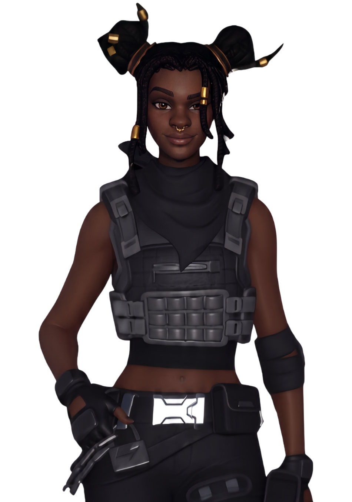
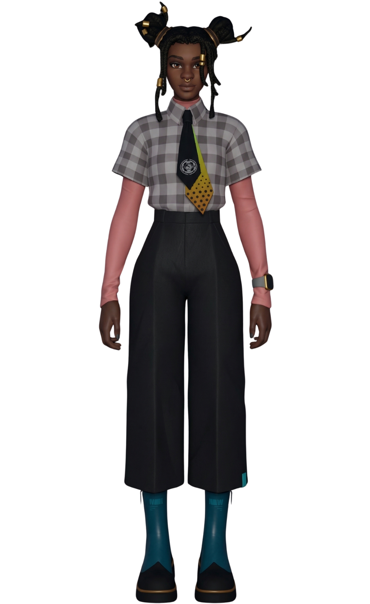
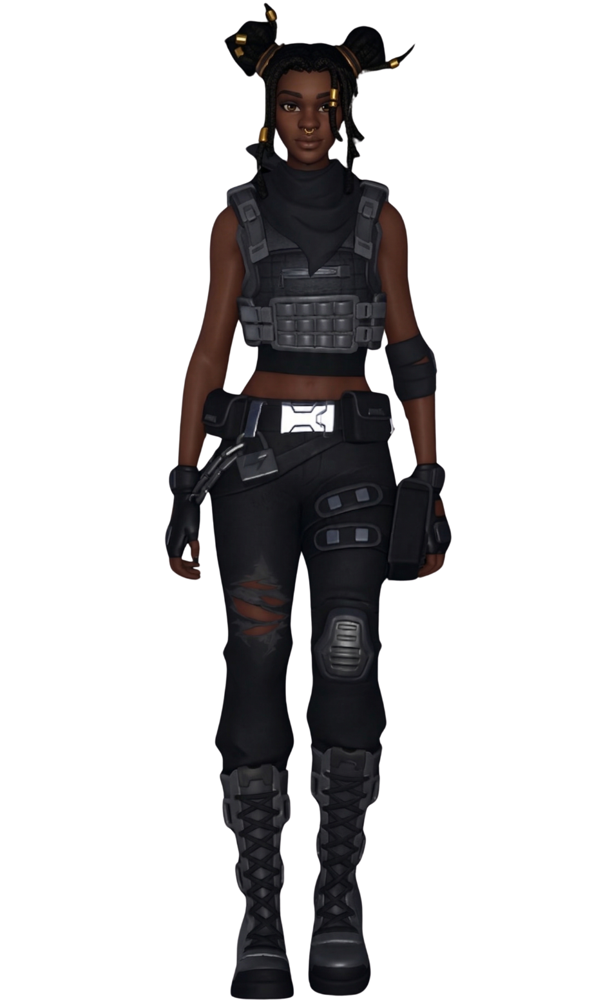
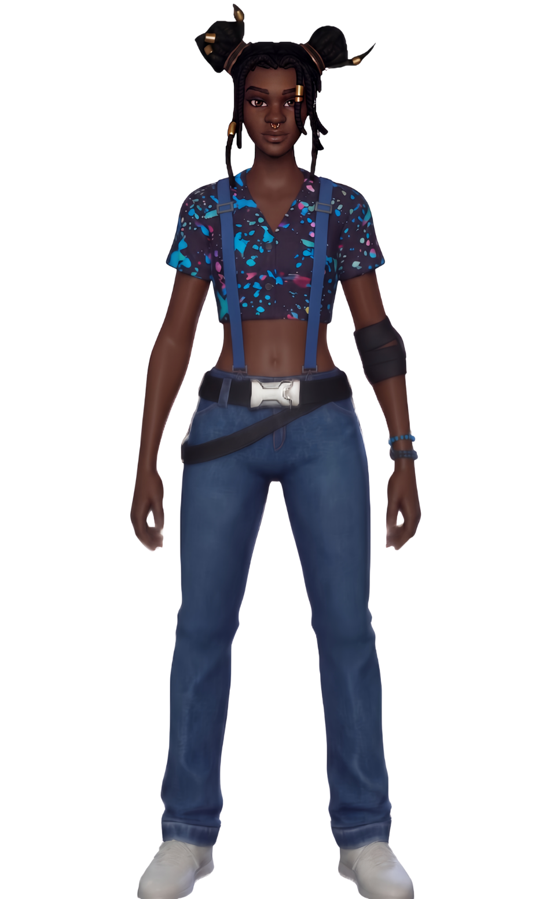
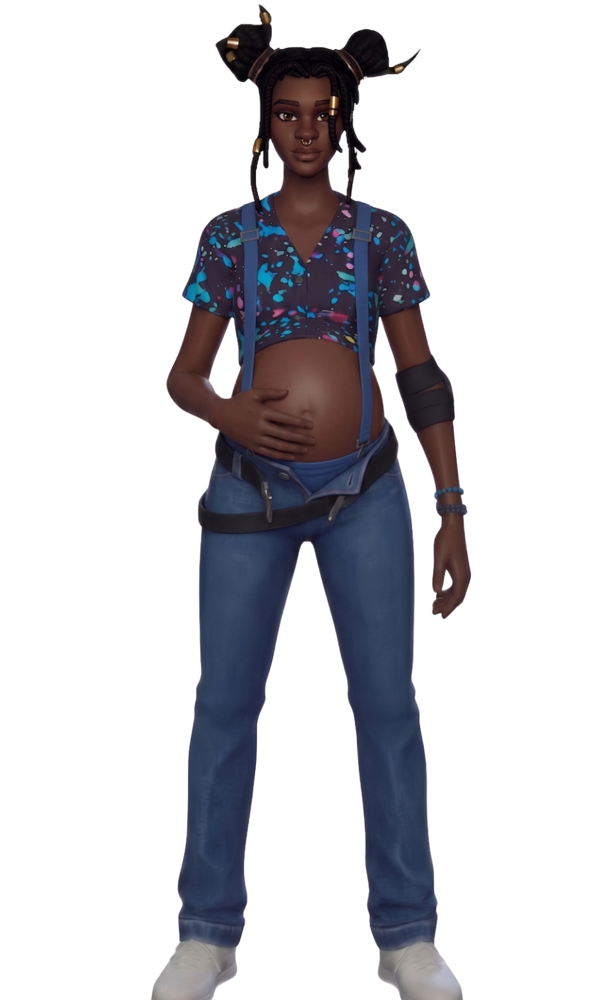

Séléna
// Archives Biographiques
La Régente Rebelle
Séléna détonnait au sein de l'Institut Onirique par sa profonde humanité. Horrifiée en découvrant les atrocités dissimulées par son patron, elle brise sa loyauté envers l'Ordre et initie une rébellion de l'intérieur avec le soldat Magnus Velkor. Trahie par sa propre sœur, elle fuit avec Magnus, avec qui elle fonde l'organisation des Sept et donne naissance à Raptor. Tragiquement contrainte d'abandonner son fils dans un orphelinat pour le soustraire à la menace de l'Institut, Séléna finit par sacrifier sa propre vie lors d'une embuscade pour permettre à Magnus de s'échapper. Ses derniers mots d'amour et son acte de bravoure ultime forgent l'héritage héroïque de sa famille.
// Variantes Visuelles



